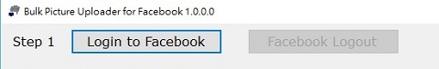
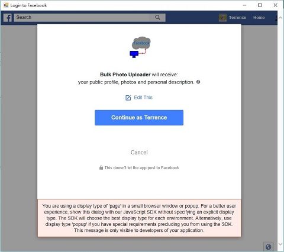
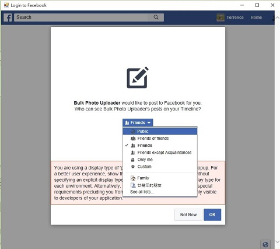
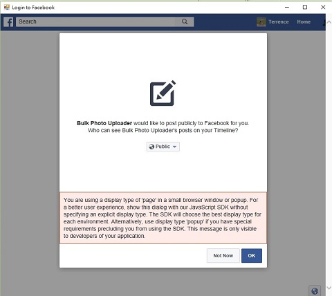
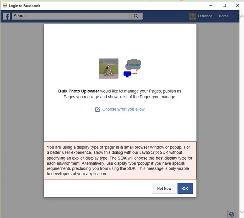
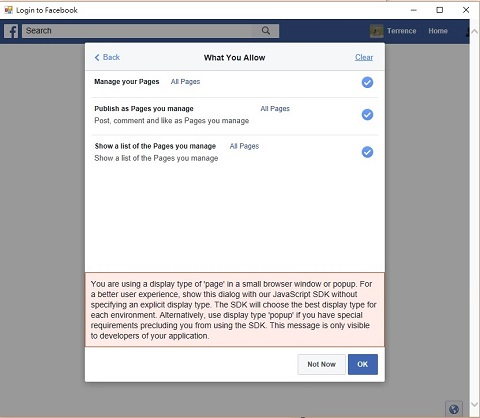
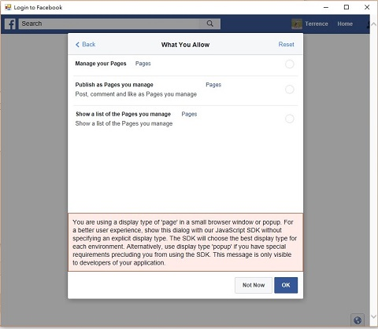
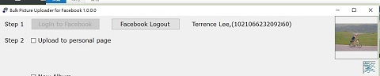

Login to Facebook
Before you could use Bulk Photo Uploader, you need to login to Facebook first. Click the button to login.
If this is the first time you use Bulk Photo Uploader, the system will ask you a few question as follows:-

Select :-

If you want to share the photos with your friend only, leave the Friends option as is. Otherwise, you could change that to Public if you want everybody to see the photos:-

Normally, photos will be set to Public because not all participant is your friend, click to continue:-

After configure the photo share setting, next is setting up the Personal Page share setting. If you plan to post photos on your Personal Page, click to continue:-

If you don't plan to use Personal Page, you could click and to disable all rights :-

Click to continue after clear all rights :-

Go back to the main page, click to complete the login process. If the login is success, you will see your Facebook ID next to your Facebook name :-

Your profile photo will be display at the top left hand corner as well.